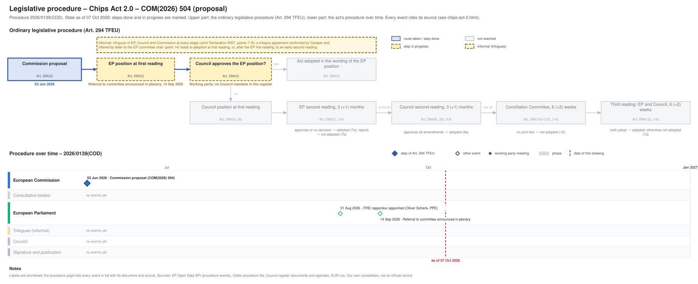

← Regulation timeline › Chips Act 2.0 › Legislative procedure · All procedures
Procedure 2026/0139(COD), ongoing, as of 01 Oct 2026. Drawing: SVG · PNG · PDF (A3) · draw.io · Page as Markdown: chips-act-2.md
| Stage | EP committee stage |
|---|---|
| Parliament | in committee since 14 Sep 2026 |
| Council | working party, latest document 29 Sep 2026 |
| Latest activity | 29 Sep 2026 · Council: Presidency compromise text (ST 13545/26) |
| Next steps | EP: rapporteur's draft report; Council: working party towards a negotiating mandate |

| Date | Actor | Event | Document | Source |
|---|---|---|---|---|
| 2026-06-03 | European Commission | Commission proposal (Art. 294(2) TFEU) | COM(2026) 504 · en.md de.md | Cellar (CELEX 52026PC0504) |
| 2026-08-31 | European Parliament | ITRE rapporteur appointed (Oliver Schenk, PPE) | EP procedure file | EP Open Data API, procedure 2026-0139 (participation RAPPORTEUR) |
| 2026-09-14 | European Parliament | Referral to committee announced in plenary | EP procedure file | EP Open Data API, procedure 2026-0139 (REFERRAL) |
Every document the Council register, the EU database of the Parliament of Austria or the EP lists for the procedure, with its state: public documents link to the official file; documents that are not public link to their entry in the Austrian database where there is one (metadata only). "Unofficially leaked": a copy is known to circulate outside the institutions; it is not published here.
| Date | Document | Kind | Subject | Status | Text |
|---|---|---|---|---|---|
| 2026-06-03 | ST 10094/26 | council-transmission | Proposal for a REGULATION OF THE EUROPEAN PARLIAMENT AND OF THE COUNCIL on a framework of measures for strengthening the Union's semiconductor ecosystem, … | public | – |
| 2026-06-03 | ST 10094/26 ADD 1 | council-transmission | ANNEXES to the PROPOSAL FOR A REGULATION OF THE EUROPEAN PARLIAMENT AND OF THE COUNCIL on a framework of measures for strengthening Europe's semiconductor … | public | – |
| 2026-06-05 | WK 8015/26 | council-note | Impact Assessment indicative check list | public | – |
| 2026-06-18 | WK 8405/26 | council-note | Presidency flash note for the meeting of the Working Party on Competitiveness and Growth (Industry) on 22 June 2026 | public | – |
| 2026-06-24 | WK 8856/26 | council-note | Presentations by the Commission | public | – |
| 2026-06-24 | WK 8857/26 | council-note | Evaluation of Regulation (EU) 2023/1781 establishing a framework of measures for strengthening Europe’s semiconductor ecosystem and amending Regulation (EU) … | public | – |
| 2026-06-24 | WK 8858/26 | council-note | Presentations by the Commission | public | – |
| 2026-06-26 | WK 9476/26 | council-note | Presidency flash note for the meeting of the Working Party on Competitiveness and Growth (Industry) on 01 July 2026 (afternoon session) | public | – |
| 2026-07-03 | WK 9988/26 | council-note | Presidency Flash for the Working Party on Competitiveness and Growth (Industry) on 8 July 2026 | public | – |
| 2026-07-08 | WK 10223/26 | council-note | Proposal on Chips Act 2.0 - Recital-article correlation table | public | – |
| 2026-07-09 | WK 10211/26 | council-note | Proposal on Chips Act 2.0 – Presentation by the Commission on Pillar I and II of the proposal | public | – |
| 2026-07-09 | WK 10387/26 | council-note | Presidency Flash for the meeting of the Working Party on Competitiveness and Growth (Industry) on 14 July 2026 | public | – |
| 2026-07-15 | WK 10618/26 | council-note | Presidency Flash for the meeting of the Working Party on Competitiveness and Growth (Industry) on 17 July 2026 | public | – |
| 2026-07-20 | WK 10792/26 | council-note | Presidency Flash note for the meeting of the Working Party on Competitiveness and Growth (Industry) on 24 July 2026 | public | – |
| 2026-07-31 | WK 11082/26 | council-note | Presidency flash note for the month of September 2026 | not public; Council register checked daily since 2026-09-25 | – |
| 2026-08-28 | WK 13097/26 | council-note | Presidency flash note for the meeting of the Working Party on Competitiveness and Growth (Industry) on 03 September 2026 | not public (LIMITE); Council register checked daily since 2026-09-25 | – |
| 2026-09-02 | ST 12586/26 | council-note | Optional consultation of the Committee of the Regions | not public (LIMITE); Council register checked daily since 2026-09-30 | – |
| 2026-09-08 | WK 13713/26 | council-note | Presidency flash note for the meeting of the Working Party on Competitiveness and Growth (Industry) on 14 September 2026 | not public (LIMITE); Council register checked daily since 2026-09-25 | – |
| 2026-09-11 | ST 12887/26 | council-note | Preparation of the Competitiveness Council (Internal Market, Industry, Research and Space) on 24 September 2026 Regulation on a European Chips Act 2.0 - Policy … | public | – |
| 2026-09-29 | ST 13545/26 | council-compromise | Presidency compromise text | not public (LIMITE); Council register checked daily since 2026-09-30 | – |
| 2026-09-29 | WK 14830/26 | council-note | Consolidated table with comments from Austria and other Member States | not public (LIMITE); Council register checked daily since 2026-09-30 | – |
| 2026-09-29 | WK 14980/26 | council-note | Explanatory note on the first Presidency compromise text of the draft proposal for a Regulation on a framework of measures for strengthening the Union's … | not public (LIMITE); Council register checked daily since 2026-09-30 | – |
Unofficial Markdown conversions for reading, searching and project folders; only the official document is authentic. "Read" opens the rendered text on GitHub, where a link to a provision (#art-13, #rec-12, #annex-i) jumps to it.
| Date | Stage | Document | Markdown | Read |
|---|---|---|---|---|
| 2026-06-03 | com-proposal | CELEX 52026PC0504 | en de | GitHub |